1004B12 power unit with manual gearbox - r+r for versions with a/c
- Path
- Procedures > 10 ENGINE > 1004 ENGINE AND POWER UNIT > 1004B POWER UNIT ASSEMBLY > 1004B12 power unit with manual gearbox - r+r for versions with a/c
- Kind
- repair procedure (removal / refitting; the operation number is the code)
- Applies to
- engines: 1.2 8v, 1.4 8v, 1.9 DIESEL; all production periods
- Interactive page
- https://sloeber94.github.io/elrnDB-fDbl/en/#/2584151
Applies to: engines: 1.2 8v; all production periods
 Removing
Removing
 Refitting
RefittingPosition the vehicle on the lift.
1. Undo the fixing bolts (1a) and release the filter casing retaining clips (1b).
2. Release the cold ir intake (2a) from the retaining band (2b).
3. Lift up the air filter casing complete with cold air intake releasing it from the oil vapour recovery hose (3a), then remove the assembly (3b).
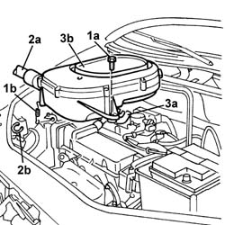
Applies to: engines: 1.2 8v; all production periods
Op. 5040A10 AIR CONDITIONING REFRIGERANT CIRCUIT - DRYING AND REPRESSURIZING
Op. 5530B52 BATTERY SUPPORT/DRIP TRAY - R.R.
Op. 4450B12 FRONT WHEELS (TWO) - R.R.
Op. 7055B54 PROTECTION/GUARD UNDER ENGINE - R.R.
Position a suitable container underneath the vheicle to collect the engine coolant.
1. Disconnect the lower pipe from the radiator, draining the coolant into the container.
2. Disconnect the pipe from the connector on the engine coolant reservoir (2a), from the rigid pipe (2b) and from the heater (2c), then remove the pipe assembly (2d).
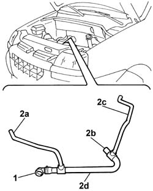
Applies to: engines: 1.2 8v; all production periods
1. Disconnect the upper pipe from the connector on the radiator (1a) and from the thermostat (1b).
2. Remove the pipe from the engine compartment.
Remove the container for collecting the coolant from underneath the vehicle.
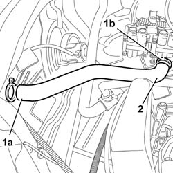
Applies to: engines: 1.2 8v; all production periods
1. Disconnect the water return pipe from the connector on the heater.
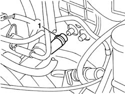
Applies to: engines: 1.2 8v; all production periods
1. Lift up the clip (1a), release the cable from the connector (1b) on the throttle and from the bracket 91c), the place the accelerator control cable (1d) at the side.
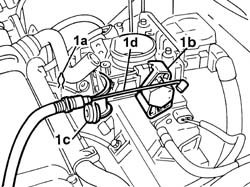
Applies to: engines: 1.2 8v; all production periods
Working the securing tabs, remove the protective cover for the junction unit in the engine compartment.
1. Disconnect the electrical connections (1a), (1b) and (1c), releasing the wiring from the retaining clips.
Description | Connector | |
|---|---|---|
1a | Engine compartment junction unit |
Description | Connector | |
|---|---|---|
1b | Engine compartment junction unit |
Description | Connector | |
|---|---|---|
1c | Engine compartment junction unit |
2. Undo the fixing nut (2a) and disconnect the earth lead (2b) from the housing on the junction unit.
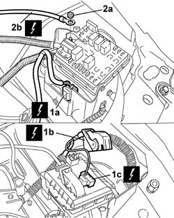
Applies to: engines: 1.2 8v; all production periods
1. Undo the nut (1a) and release the earth lead (1b) on the gearbox.
2. Disconnect the electrical connection for the reversing lights.
3. Undo the adjustment nut (3a) and release the clutch release cable (3b) from the connector on the gearbox (3c) and place it outside the work area.
Description | Connector | |
|---|---|---|
1b | Earth on engine |
Description | Connector | |
|---|---|---|
2 | Reversing lights switch |
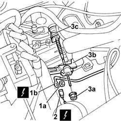
Applies to: engines: 1.2 8v; all production periods
1. Remove the two fastening clips (1a) and release the two ends of the flexible gear engagement and selection cables (1b).
2. Release the two gear selection and engagement cables from the bracket and place them outside the work area.
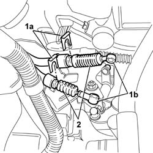
Applies to: engines: 1.2 8v; all production periods
1. Undo the fuel manifold breather valve (1b) plug (1a) and place the tool (1c) on the fuel manifold and discharge any fuel pressure that has formed inside the actual manifold.
Description | Code | |
|---|---|---|
1c | Rapid attachment connector | 1.870.684.000 |
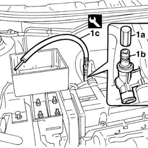
Applies to: engines: 1.2 8v; all production periods
1. Disconnect the brake servo vacuum pipe (1a) and the evaporation control system pipe (1b) from the throttle casing.
2. Disconnect the single fuel supply pipe from the manifold.
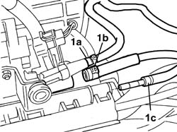
Applies to: engines: 1.2 8v; all production periods
Position a suitable container for collecting the power assisted steering fluid from the reservoir and the pipes.
1. Using the band (1a), disconnect the supply pipe (1b) from the reservoir to the power steering pump.
2. Undo the connector (2a) and disconnect the return pipe (2b) to the power assisted steering box.
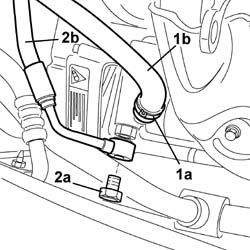
Applies to: engines: 1.2 8v; all production periods
1. Undo the fixing bolt (1a) and move the return pipe (1b) to the power steering box outside the work area.
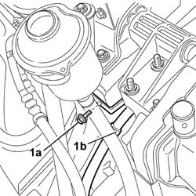
Applies to: engines: 1.2 8v; all production periods
1. Undo the fixing bolt (1a) and disconnect the air conditioning system high pressure pipe from the compressor.
2. Undo the fixing nut (2a) and disconnect the air conditioning system low pressure pipe from the coupling (2b).
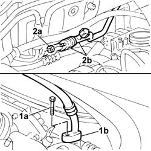
Applies to: engines: 1.2 8v; all production periods
Raise the vehicle.
1. Remove the staking and then undo the nuts fixing the driveshafts to the wheel hubs on both sides.
2. Undo the bolts fixing the steering knuckles to the shock absorbers.
3. Undo the nuts (3a) and release the steering track rod ends from the steering knuckles using the tool (3b).
4. Then release the driveshafts from the hubs, securing them to the power unit using suitable cords.
Description | Code | |
|---|---|---|
3a | Head extractor | 1.847.035.000 |
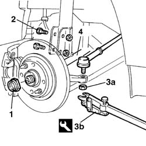
Applies to: engines: 1.2 8v; all production periods
Op. 1072C44 EXHAUST MANIFOLD HEAT SHIELD R+R
Op. 1072C16 EXHAUST MANIFOLD WITH CATALYTIC CONVERTER - R R
Op. 1008C10 POWER UNIT UPPER SUPPORT - R R
1. Fit the service bracket (1a) on the gearbox (1b), on the cylinder head (1c) and on the engine block complete with shackle as illustrated.
2. Secure the chains fitted with hooks to the hydraulic lifting device and to the brackets using the hooks.
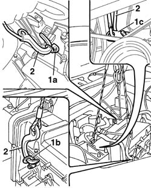
Applies to: engines: 1.2 8v; all production periods
1. Disconnect the coolant recirculation pipe from the reservoir.
2. Undo the nuts fixing the rigid power unit support to the engine.
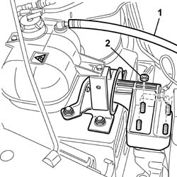
Applies to: engines: 1.2 8v; all production periods
1. Undo the nut securing the flexible mounting to the gearbox side rigid support.
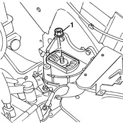
Applies to: engines: 1.2 8v; all production periods
Lower and carefully manoeuvre the hydraulic lift, then remove the power unit from the lower part of the engine compartment taking care not to damage the surrounding components.
Rest the power unit on a support.
Release the hooks from the brackets, raise the vehicle, resecure the hooks for the hydraulic lift and place the power unit away from the vehicle.
Applies to: engines: 1.2 8v; all production periods
Refitting
RemovingTake the power unit from the support and place it under the engine compartment.
Release the hydraulic lift from the power unit and lower the vehicle in order to centre the actual power unit.
Secure the hydraulic lift to the power unit again and raise it until the power unit supports can be fastened to the bodyshell.
Tighten the nuts fixing the timing side power unit rigid support to the engine to torque.
Fastening | Component | dia | Value (daNm) | |
|---|---|---|---|---|
- | Nut | RIGID ENGINE MOUNT, TIMING SIDE | M10 X 1.25 | (Flexible mounting side) 5 |
Tighten the nut fixing the flexible mounting to the gearbox side rigid support.
Fastening | Component | dia | Value (daNm) | |
|---|---|---|---|---|
- | Nut | POWER UNIT GEARBOX SIDE RIGID SUPPORT | M12 X 1.25 | (Flexible mounting side) 9 |
Connect the coolant recirculation pipe from the reservoir.
Remove the brackets positioned previously for supporting the power unit.
Op. 1008C10 POWER UNIT UPPER SUPPORT - R R
Op. 1072C16 EXHAUST MANIFOLD WITH CATALYTIC CONVERTER - R R
Op. 1072C44 EXHAUST MANIFOLD HEAT SHIELD R+R
Fit the driveshafts on the wheel hubs.
Fit the track rod ends in the steering knuckle and tighten the fixing nuts to torque.
Fastening | Component | dia | Value (daNm) | |
|---|---|---|---|---|
- | Nut | ADJUSTABLE STEERING LINKS | M10 X 1.25 | 4.9 |
Tighten the bolts securing the steering knuckles to the shock absorbers to torque.
Fastening | Component | dia | Value (daNm) | |
|---|---|---|---|---|
- | Nut | FRONT SHOCK ABSORBERS (S.M.) | M10 X 1.25 | (Steering knuckle) 12 |
Tighten the nuts fixing the driveshafts to the wheel hubs on both wheels to torque.
Fastening | Component | dia | Value (daNm) | |
|---|---|---|---|---|
- | Nut | FRONT HUBS COMPLETE WITH BEARING | M22 | 7 + 55° |
1. Stake the nuts fixing the driveshafts to the wheel hubs on both sides working as illustrated.
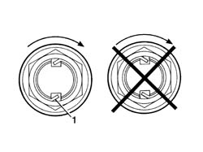
Applies to: engines: 1.2 8v; all production periods
Lower the vehicle.
Connect the air conditioning system high pressure pipe to the compressor.
Connect the air conditioning system low pressure pipe to the coupling.
Connect the supply pipe from the reservoir to the power assisted steering pump.
Connect the return pipe to the power steering box.
Connect the brake servo vacuum pipe and the evaporation control system pipe to the throttle casing.
Connect the single fuel supply pipe from the manifold.
Place the two gear selection and engagement cables on the bracket.
Fasten the two ends of the gear selection and engagement cables to the ball joints and secure them to the bracket using the two clips.
Connect the clutch release cable to the gearbox and to the lever and tighten the adjustment nut.
Connect the electrical connection for the reversing lights.
Connect the earth lead on the gearbox.
Description | Connector | |
|---|---|---|
- | Earth on engine |
Description | Connector | |
|---|---|---|
- | Reversing lights switch |
Connect the earth lead on the junction unit.
Connect the electrical connections to the junction unit and secure the wiring to the retaining clips.
Description | Connector | |
|---|---|---|
- | Engine compartment junction unit |
Description | Connector | |
|---|---|---|
- | Engine compartment junction unit |
Description | Connector | |
|---|---|---|
- | Engine compartment junction unit |
Fit the engine compartment junction unit protective cover.
Position the accelerator control cable on the mounting bracket and fit it to the throttle valve control.
Connect the water return pipe to the heater.
Fit the upper pipe and connect it to the thermostat and to the radiator.
Fit the lower water pipe and connect it to the engine coolant reservoir, to the rigid pipe, to the radiator and to the heater.
Op. 4450B12 FRONT WHEELS (TWO) - R.R.
Op. 5530B52 BATTERY SUPPORT/DRIP TRAY - R.R.
Fit the air filter assembly and secure it using the bolts taking care to engage the rubber engine oil vapour pipe in the special housing in the filter casing.
Secure the air intake pipe to the retaining clip.
Attach the retaining clip to the filter casing.
Op. 0010T21 COOLANT - CHECK DENSITY AND TOP UP IF NECESSARY
Op. 1068A10 ACCELERATOR PEDAL CONTROL - CHECK, ADJUST IF NECESSARY AND LUBRICATE
Op. 5040A10 AIR CONDITIONING REFRIGERANT CIRCUIT - DRYING AND REPRESSURIZING
Op. 7055B54 PROTECTION/GUARD UNDER ENGINE - R.R.
Remove the vehicle from the lift
Applies to: engines: 1.9 DIESEL; all production periods
Removing
RefittingPosition the vehicle on a lift.
Op. 7055B54 PROTECTION/GUARD UNDER ENGINE - R.R.
Op. 5040A10 AIR CONDITIONING REFRIGERANT CIRCUIT - DRYING AND REPRESSURIZING
Op. 5530B52 BATTERY SUPPORT/DRIP TRAY - R.R.
Op. 4450B12 FRONT WHEELS (TWO) - R.R.
Op. 1048A32 HOSE FROM AIR FILTER TO INTAKE MANIFOLD - R.R.
1. Undo the bolts (1a) fixing the mounting bracket, disconnect the electrical connection (1b) for the built in throttle casing actuator, disconnect the cold air intake pipe (1c) from the filter casing and also disconnect the vacuum intake pipe (1d) from the connector on the shutter valve.
Description | Connector | |
|---|---|---|
1b | Throttle body solenoid valve |
2. Remove the filter casing.
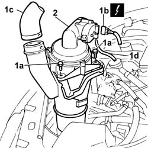
Applies to: engines: 1.9 DIESEL; all production periods
Have a suitable container for collecting the engine coolant ready.
1. Disconnect the lower engine pipe from the radiator (1a), from the thermostat (1b) and from the connector (1c) on the rigid section of the pump water intake pipe.
2. Remove the lower pipe from the engine compartment.
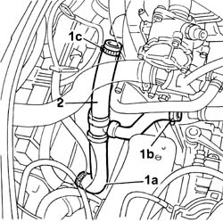
Applies to: engines: 1.9 DIESEL; all production periods
1. Disconnect the upper engine pipe from the radiator (1a) and from the thermostat (1b).
2. Remove the upper pipe from the engine compartment.
Then remove the container used for collecting the engine coolant.
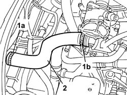
Applies to: engines: 1.9 DIESEL; all production periods
1. Disconnect the pipe (1a) and the heater unit water supply and return pipe (1b) from the thermostat.
2. Disconnect the vacuum air pipe from the brake servo.
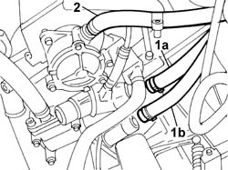
Applies to: engines: 1.9 DIESEL; all production periods
1. Lift up the fuse box protective cover.
2. Disconnect the electrical connections (2a) and release the fuse box (2b).
Description | Connector | |
|---|---|---|
2a | Front/engine coupling |
3. Undo the nut and disconnect the positive terminal lead from the fuse box.
4. Turn the fuse box over and disconnect the reed connection from the junction unit.
Description | Connector | |
|---|---|---|
4 | Engine compartment junction unit |
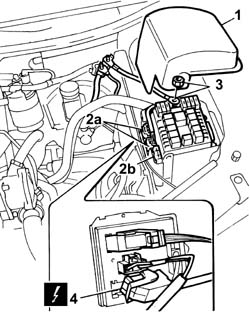
Applies to: engines: 1.9 DIESEL; all production periods
1. Undo the retaining bolts.
2. Move the operating cylinder out of the work area.
3. Undo the bolt (3a) and disconnect the earth lead (3b) from the gearbox.
Description | Connector | |
|---|---|---|
3b | Battery earth |
4. Disconnect the electrical connection for the reversing light switch.
Description | Connector | |
|---|---|---|
4 | Reversing lights switch |
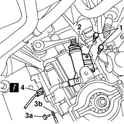
Applies to: engines: 1.9 DIESEL; all production periods
1. Connect the electrical connection for the injection control unit.
Description | Connector | |
|---|---|---|
1 | Engine management control unit |
2. Undo the nut (2a) and move the heater plugs control unit (2b) onto the engine.
3. Undo the fixing nut (3a) and disconnect the injection earth lead (3b) from the engine compartment bulkhead.
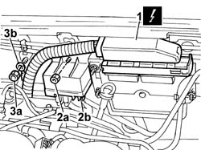
Applies to: engines: 1.9 DIESEL; all production periods
1. Disconnect the two injection pump supply (1a) and return (1b) pipes from the fuel filter.
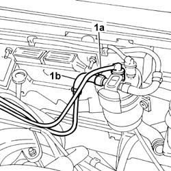
Applies to: engines: 1.9 DIESEL; all production periods
1. Release the ends of the gear selection and engagement cables from the idler unit.
2. Release the two retaining clips.
3. Release the two flexible cables from the mounting bracket.
Applies to: engines: 1.9 DIESEL; all production periods
1. Disconnect the two engine coolant pipes (1a) and (1b) from the rigid pipe and from the rigid section of the recirculation pipe.
2. Undo the retaining bolts.
3. Remove the engine coolant reservoir.
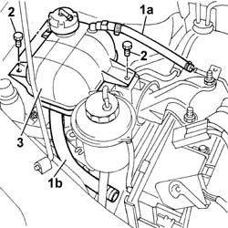
Applies to: engines: 1.9 DIESEL; all production periods
Raise the lift.
Position a suitable container for collecting the power steering pump fluid.
1. Disconnect the rapid connector (1a), separate the two oil pipes (1b) and drain the fluid into the special container.
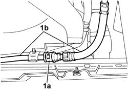
Applies to: engines: 1.9 DIESEL; all production periods
Lower the vehicle.
1. Undo the bolts fixing the power assisted steering fluid reservoir.
2. Disconnect the two pipes (2a) and (2b) from the reservoir.
3. Remove the power steering pump fluid reservoir.
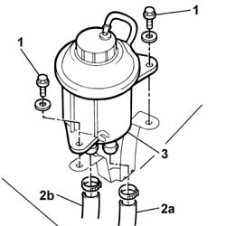
Applies to: engines: 1.9 DIESEL; all production periods
1. Disconnect the oil supply pipe from the power steering pump to the steering box.
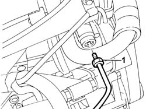
Applies to: engines: 1.9 DIESEL; all production periods
1. Disconnect the engine oil vapour recovery pipe from the tappet cover.
2. Undo the bolts fixing the exhaust gas supply pipe to the E.G.R. valve.
3. Undo the retaining bolts.
4. Remove the tappet cover with built-in intake ducts.
Recover the underlying gasket.
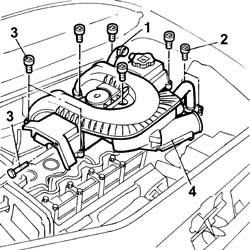
Applies to: engines: 1.9 DIESEL; all production periods
1. Undo the retaining bolts.
2. Disconnect the air conditioning system two high pressure and low pressure pipes from the compressor.
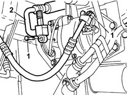
Applies to: engines: 1.9 DIESEL; all production periods
Raise the vehicle.
1. Remove the staking and then undo the nuts fixing the driveshafts to the wheel hubs on both sides.
2. Undo the bolts fixing the steering knuckles to the shock absorbers.
3. Undo the nuts (3a) and release the steering track rod ends from the steering knuckles using the tool (3b).
4. Then release the driveshafts from the hubs, securing them to the power unit using suitable cords.
Description | Code | |
|---|---|---|
3b | Head extractor | 1.847.035.000 |
Applies to: engines: 1.9 DIESEL; all production periods
1. Undo the nuts fixing the reinforcement bracket to the oil sump.
2. Remove the reinforcement bracket.
3. Undo the nuts fixing the exhaust pipe to the manifold.
4. Undo the nuts fixing the pipe to the catalytic converter.
5. Undo the fixing bolt and release the rubber mounting complete with bodyshell pin.
6. Remove the front section of the exhaust pipe.
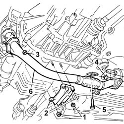
Applies to: engines: 1.9 DIESEL; all production periods
Position a hydraulic lift under the gearbox to work safely.
1. Undo the centre bolt fixing the reaction rod to the bodyshell.
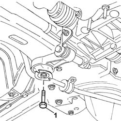
Applies to: engines: 1.9 DIESEL; all production periods
Position a hydraulic jack underneath the engine to support it.
1. Undo the three nuts securing the support to the bodyshell.
2. Undo the two nuts fixing the support to the engine.
3. Remove the timing side engine support.
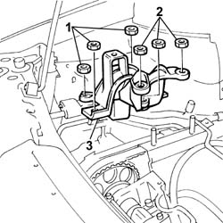
Applies to: engines: 1.9 DIESEL; all production periods
1. Position the brackets on the support for the injection pump andon the gearbox to support the power unit.
2. Secure the metal cables to the brackets positioned previously.
3. Position a hydraulic lift and secure the metal cables for supporting the engine during the removal operation to it.
Tension the metal cables and remove the hydraulic jack from underneath the vehicle.
4. Undo the nut fixing the mounting to the gearbox side engine support, lower the lift and remove the power unit.
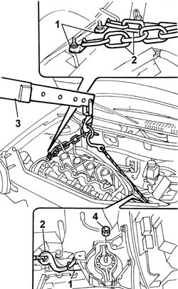
Applies to: engines: 1.9 DIESEL; all production periods
Lower and carefully manoeuvre the hydraulic lift, then remove the power unit from the lower part of the engine compartment taking care not to damage the surrounding components.
Rest the power unit on a support.
Release the hooks from the brackets, raise the liift, resecure the hooks for the hydraulic lift and place the power unit away from the vehicle.
Applies to: engines: 1.9 DIESEL; all production periods
Refitting
RemovingTake the power unit from the support and place it under the engine compartment.
Release the hydraulic lift from the power unit and lower the vehicle in order to centre the actual power unit.
Secure the hydraulic lift to the power unit again and raise it until the power unit supports can be fastened to the bodyshell.
Tighten the nut fixing the gearbox side engine mounting to torque.
Fastening | Component | dia | Value (daNm) | |
|---|---|---|---|---|
- | Nut | POWER UNIT GEARBOX SIDE RIGID SUPPORT | M10 | 5 |
Position a hydraulic jack underneath the oil sump to support the engine.
Remove the mounting brackets and the cables secured to them.
Fit the rigid engine support, complete with flexible mounting.
Tighten the nuts fixing the rigid support to the bodyshell to torque.
Fastening | Component | dia | Value (daNm) | |
|---|---|---|---|---|
- | Nut | RIGID ENGINE MOUNT, TIMING SIDE | M10 X 1.25 | (Bodyshell side) 4.3 |
Tighten the nuts fixing the rigid support to the engine to torque.
Fastening | Component | dia | Value (daNm) | |
|---|---|---|---|---|
- | Nut | RIGID ENGINE MOUNT, TIMING SIDE | M10 X 1.25 | (Engine side) 5 |
Fit the power steering fluid reservoir mounting bracket and tighten the two fixing bolts.
Position the engine coolant expansion tanke and tighten the fixing bolts.
Tighten the centre bolt fixing the reaction rod to the bodyshell to torque.
Fastening | Component | dia | Value (daNm) | |
|---|---|---|---|---|
- | Bolt | POWER UNIT REACTION ROD | M12 X 1.25 | 12 |
Fit the front section of the exhaust pipe.
Tighten the nuts fixing the exhaust pipe to the manifold to torque.
Fastening | Component | dia | Value (daNm) | |
|---|---|---|---|---|
- | Nut | EXHAUST PIPE TO ENGINE | M8 | (Exhaust manifold) 3 |
Tighten the nuts fixing the pipe to the catalytic converter to torque.
Fastening | Component | dia | Value (daNm) | |
|---|---|---|---|---|
- | Nut | EXHAUST PIPE TO ENGINE | M8 | (catalytic converter) 3 |
Tighten the bolt fixing the rubber mounting complete with pin to the bodyshell.
Tighten the nuts fixing the reinforcement bracket on the oil sump.
Tighten the bolts securing the steering knuckle to the shock absorber to torque.
Fastening | Component | dia | Value (daNm) | |
|---|---|---|---|---|
- | Nut | FRONT HUB STRUT | M12 X 1.25 | 12 |
Place the steering track rod end pin in position.
Tighten the fixing nut to the recommended torque.
Fastening | Component | dia | Value (daNm) | |
|---|---|---|---|---|
- | Nut | ADJUSTABLE STEERINGI LINK JOINTS (C-S) | M10 X 1.25 | 4.9 |
Tighten the wheel hub fixing nut to torque.
Fastening | Component | dia | Value (daNm) | |
|---|---|---|---|---|
- | Nut | FRONT HUBS COMPLETE WITH BEARING | M22 | 7 + 55° |
1. Proceed with staking the nut following the illustration below.
Applies to: engines: 1.9 DIESEL; all production periods
Lower the lift.
Connect the two high and low pressure pipes to the air conditioning compressor.
Fastening | Component | dia | Value (daNm) | |
|---|---|---|---|---|
- | Bolt | COMPRESSOR INLET PIPE | M6 | 0.85 |
Fastening | Component | dia | Value (daNm) | |
|---|---|---|---|---|
- | Bolt | PIPES FROM COMPRESSOR TO CONDENSOR | M6 | 0.85 |
Fit the new gasket on the tappet cover.
Fit the tappet cover with built-in intake ducts tightening the bolts to torque.
Fastening | Component | dia | Value (daNm) | |
|---|---|---|---|---|
- | Bolt | CAM COVER | M6 | 1 |
Connect the engine oil vapour pipe to the tappet cover.
Tighten the bolts fixing the exhaust gas supply pipe to the E.G.R. valve to torque.
Fastening | Component | dia | Value (daNm) | |
|---|---|---|---|---|
- | Bolt | EGR VALVE PIPE | M8 | (EGR valve) 2.5 |
Connect the oil supply pipe from the power steering pump to the steering box.
Connect the two power steering system fluid pipes to the fluid reservoir.
Fit the power assisted steering fluid reservoir on the mounting bracket tightening the fixing bolts.
Secure the power steering fluid pipe fastening the retaining bracket to the bodyshell.
Connect the recirculation pipe from the engine coolant reservoir to the rigid section secured to the head.
Connect the pipe connecting the engine coolant reservoir to the pump rigid water inlet pipe.
Place the two flexible gear control cables on the mounting bracket.
Secure the two flexible cables to the bracket attaching the two clips.
Fit the ends of the gear selection and engagement cables on the idler unit.
Connect the two supply and return pipes from the injection pump to the fuel filter.
Connect the electrical connection for the injection control unit.
Description | Connector | |
|---|---|---|
- | Engine management control unit |
Fit the heater plugs control unit on the engine compartment bulkhead and secure it using the nut.
Tighten the fixing nut and connect the injection earth lead to the engine compartment bulkhead.
Connect the electrical connection for the reversing light switch.
Description | Connector | |
|---|---|---|
- | Reversing lights switch |
Connect the earth lead to the gearbox.
Description | Connector | |
|---|---|---|
- | Battery earth |
Fit the operating cylinder in the special housing on the gearbox and tighten the fixing bolts to torque.
Fastening | Component | dia | Value (daNm) | |
|---|---|---|---|---|
- | Bolt | CLUTCH CONTROL HYDRAULIC ACTIVATOR | M8 | 2.8 |
Turn the fuse box over and connect the connections disconnected previously.
Description | Connector | |
|---|---|---|
- | Engine compartment junction unit |
Connect the positive terminal lead to the fuse box.
Position the fuse box protective cover.
Connect the vacuum air pipe from the brake servo.
Connect the heater coolant supply and return pipes to the thermostat.
Position the upper pipe in the engine compartment.
Connect the upper engine pipe to the radiator and to the thermostat.
Position the lower pipe in the engine compartment.
Connect the lower engine pipe to the radiator, to the thermostat and to the rigid section of the pump water inlet pipe.
Fit the air filter casing assembly.
Connect the vacuum pipe for the built in throttle casing actuator.
Tighten the bolts fixing the filter mounting bracket and connect the cold air intake pipe to the casing.
Connect the electrical connection for the integrated throttle casing actuator.
Description | Connector | |
|---|---|---|
2b | Throttle body solenoid valve |
Top up the power steering system fluid level.
Type | Component | Description | Qty. | |
|---|---|---|---|---|
- | Oil [l] | POWER ASSISTED STEERING CIRCUIT | TUTELA GI/A | - |
Op. 1048A32 HOSE FROM AIR FILTER TO INTAKE MANIFOLD - R.R.
Op. 4450B12 FRONT WHEELS (TWO) - R.R.
Op. 5530B52 BATTERY SUPPORT/DRIP TRAY - R.R.
Op. 0010T20 ENGINE COOLANT - CHANGE
Op. 5040A10 AIR CONDITIONING REFRIGERANT CIRCUIT - DRYING AND REPRESSURIZING
Op. 7055B54 PROTECTION/GUARD UNDER ENGINE - R.R.
Remove the vehicle from the lift.
Applies to: engines: 1.4 8v; all production periods
Removing
Refitting- Position the vehicle on a lift.
- Turn the ignition key to the OFF position.
- Disconnect the negative battery terminal.
Description | Connector | |
|---|---|---|
- | BATTERY |
Op. 5530B52 BATTERY SUPPORT/DRIP TRAY - R.R.
Op. 0010T84 COOLANT FOR AIR CONDITIONING SYSTEM - DEHYDRATE AND RECHARGE
Op. 7055B54 PROTECTION/GUARD UNDER ENGINE - R.R.
Op. 0010T20 ENGINE COOLANT - CHANGE
Op. 0010T40 CHANGE MANUAL GEARBOX OIL
Op. 4450B12 FRONT WHEELS (TWO) - R.R.
Position a suitable container underneath the vehicle to collect the engine coolant.
1. Using the special tool, remove the band (1a) and disconnect the coolant outlet pipe from the radiator (1b). Collect the coolant that comes out in a suitable container.

Applies to: engines: 1.4 8v; all production periods
1. Compress the clips at the point shown by the arrow and remove the cold air intake hose, releasing it from the mounting.
2. Undo the fixing bolts (2a) and detach the air filter (2b).
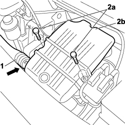
Applies to: engines: 1.4 8v; all production periods
1. Lift up the air filter, loosen the band (1a) and disconnect the engine oil vapour pipe (1b) and the pipe (1c) from the air filter.
2. Remove the air filter assembly from the engine compartment.
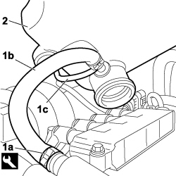
Applies to: engines: 1.4 8v; all production periods
1. Using the special tool, remove the band (1a) and disconnect the intermediate coupling for the coolant supply pipe to the water pump from the expansion tank.
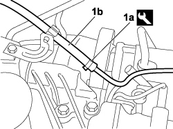
Applies to: engines: 1.4 8v; all production periods
1. Using the special tool, remove the band (1a) and disconnect the coolant return pipe from the expansion tank.
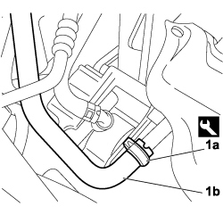
Applies to: engines: 1.4 8v; all production periods
1. Using the special tool, remove the bands (1a) securing the coolant return pipe to the water pump and the coolant return pipe from the passenger compartment heater.
2. Release the branch of the return pipe from the passenger compartment heater from the mountings.
Collect the remaining coolant that comes out in a suitable container.

Applies to: engines: 1.4 8v; all production periods
1. Using the special tool, remove the bands (1a), thermostat side and (1b), radiator side and disconnect the coolant supply pipe to the radiator.
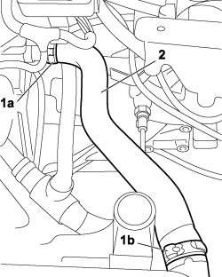
Applies to: engines: 1.4 8v; all production periods
1. Using the special tool, remove the band (1a), thermostat side and disconnect the coolant supply pipe to the passenger compartment heater.
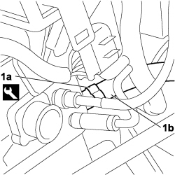
Applies to: engines: 1.4 8v; all production periods
1. Disconnect the electrical connection for the reversing light switch.
Description | Connector | |
|---|---|---|
1 | REVERSING LIGHTS SWITCH |
2. Undo the bolts and move the clutch control actuator aside.
3. Undo the nut and disconnect the earth lead.
Description | Connector | |
|---|---|---|
3 | BATTERY EARTH ON ENGINE |
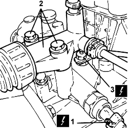
Applies to: engines: 1.4 8v; all production periods
1. Disconnect the gear selector and engagement cables.
2. Move the locking bush (2a) backwards and remove the gear selector cable (2b).
3. Move the locking bush (3a) backwards and remove the gear engagement cable (3b).
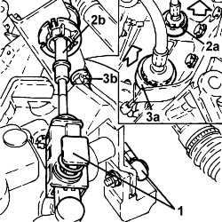
Applies to: engines: 1.4 8v; all production periods
1. Connect the electrical connection for the injection control unit.
Description | Connector | |
|---|---|---|
1 | ENGINE MANAGEMENT CONTROL UNIT |
2. Disconnect the engine coupling.
Description | Connector | |
|---|---|---|
2 | FRONT/ENGINE COUPLING |
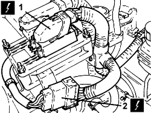
Applies to: engines: 1.4 8v; all production periods
1. Lift up the retaining clip (1a) and release the fuel supply pipe (1b) to the distribution manifold.
2. Open the retaining clip (2a) and release the fuel vapour recovery pipe then, adjusting the connector (2b), disconnect the fuel supply pipe from the solenoid valve.
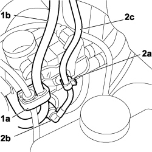
Applies to: engines: 1.4 8v; all production periods
1. Disconnect the electrical connection from the fuel vapour solenoid valve.
Description | Connector | |
|---|---|---|
1 | FUEL VAPOUR RECOVERY SOLENOID |
2. Disconnect the fuel pipe from the rail.
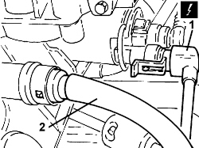
Applies to: engines: 1.4 8v; all production periods
1. Disconnect the electrical connection from the throttle casing.
Description | Connector | |
|---|---|---|
1 | INTEGRAATED THROTTLE CASING ACTUATOR |
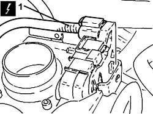
Applies to: engines: 1.4 8v; all production periods
1. Disconnect the single-acting valve from the brake servo.
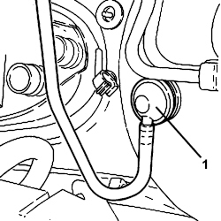
Applies to: engines: 1.4 8v; all production periods
1. Undo the bolts (1a) and disconnect the pipes (1b) and (1c) for the refrigerant from the air conditioning system compressor (1d).
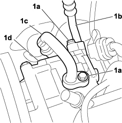
Applies to: engines: 1.4 8v; all production periods
1. Disconnect the electrical connections of the lambda sensors upstream and downstream of the catalytic converter.
Description | Connector | |
|---|---|---|
1 | LAMBDA SENSOR ON CATALYTIC CONVERTER |
Applies to: engines: 1.4 8v; all production periods
1. Undo the fixing nuts (1a) and disconnect the exhaust pipe from the manifold/catalytic converter (1b).
Applies to: engines: 1.4 8v; all production periods
1. Unscrew the fixing bolt (1a) and the bolt (1b), then remove the lower reaction link (1c) from the vehicle.
Applies to: engines: 1.4 8v; all production periods
1. Undo the nut (1a) and disconnect the steering links (1b) using the tool (1c).
2. Unscrew the bolts securing the front stub axles to their shock absorbers.
Code | Description | Function | |
|---|---|---|---|
1c | 1871000700 | Extractor | Steering link extraction |
Applies to: engines: 1.4 8v; all production periods
1. Disconnect the left driveshaft from the differential and secure it appropriately.
Applies to: engines: 1.4 8v; all production periods
1. Disconnect the right driveshaft from the differential and secure it appropriately.

Applies to: engines: 1.4 8v; all production periods
- Lower the lift and place a suitable support underneath the power unit.
1. Fit the element (1a) on the hydraulic hoist (1b).
Code | Description | Function | |
|---|---|---|---|
1c | 1871001700 | Balance | Removing-refitting unit |
2. Attach the power unit at the points shown in the diagram (2a), (2b) and (2c).
- Gently raise the power unit and make sure that the chains have the same tension.
Applies to: engines: 1.4 8v; all production periods
1. Undo the fixing bolts (1a), then remove the engine coolant expansion tank (1b), complete with flexible pipe and bracket (1c).
2. Loosen the bolt (2a) and the nut fixing the bracket. Move the power steering fluid reservoir (2b) complete with bracket aside without disconnecting the pipe.
3. Undo the nuts securing the flexible mounting to the bodyshell.
4. Undo the fixing nuts and remove the power unit rigid support flexible mounting from the vehicle.
Applies to: engines: 1.4 8v; all production periods
1. Undo the nut (1a) securing the power unit gearbox side rigid support to the flexible mounting block (1b).
Applies to: engines: 1.4 8v; all production periods
- Lower the power unit until it rests on the board positioned previously.
- Release the power unit from the support tools.

Applies to: engines: 1.4 8v; all production periods
1. Undo the nut (1a) securing the power unit gearbox side rigid support to the flexible mounting block (1b).
Applies to: engines: 1.4 8v; all production periods
Refitting
Removing- Fit the support tools to the power unit.
- Place the power unit in its housing using the hydraulic hoist.
- Tighten the nut fixing the flexible mounting to the gearbox side rigid power unit support to the recommended torque.
Value daNm | Fastening | Component | dia | |
|---|---|---|---|---|
- | 8.1 ÷ 9.9 | Nut | Gearbox side support flexible mounting to rigid support | M12 |
1. Position the flexible mounting for the timing side power unit rigid support and tighten the nuts fixing it to the engine support and to the bodyshell to the recommended torque.
Value daNm | Fastening | Component | dia | |
|---|---|---|---|---|
- | (Rigid support side) 4.5 - 5.5 | Nut | Timing side power unit rigid support flexible mounting | M12 |
Value daNm | Fastening | Component | dia | |
|---|---|---|---|---|
- | (Bodyshell side) 4.1 - 5.0 1.4 8v | Nut | Timing side power unit rigid support flexible mounting | M12 |
- Remove the hydraulic hoist and tool used for supporting the power unit safely.
- Connect the driveshafts and tighten the protective boot retaining bands.
- Tighten the bolts fixing the front hub steering knuckles to the shock absorbers to the recommended torque.
Value daNm | Fastening | Component | dia | |
|---|---|---|---|---|
- | (Shock absorber side) 12 | Bolt | FRONT HUB STEERING KNUCKLE | M10 |
- Connect the steering links to the front steering knuckles and tighten the nuts to the specified torque.
Value daNm | Fastening | Component | dia | |
|---|---|---|---|---|
- | (Steering knuckle) 4.9 | Nut | STEERING LINKS | M8 |
- Secure the lower reaction link to the suspension crossmember and to the gearbox tightening it to the recommended torque.
Value daNm | Fastening | Component | dia | |
|---|---|---|---|---|
- | (Front suspension crossmember side) 11.4 - 12 | Bolt | LOWER ROD ON ENGINE | M12 |
Value daNm | Fastening | Component | dia | |
|---|---|---|---|---|
- | (Gearbox side) 7.2 - 8.3 | Bolt | LOWER ROD ON ENGINE | M12 |
- Connect the exhaust pipe to the manifold - catalytic converter unit and tighten the nuts to the specified torque.
Value daNm | Fastening | Component | dia | |
|---|---|---|---|---|
- | 4.5 | Nut | EXHAUST MANIFOLD/CATALYTIC CONVERTER | M10 |
- Connect the electrical connections to the two catalytic converter Lambda sensors.
Description | Connector | |
|---|---|---|
- | LAMBDA SENSOR ON CATALYTIC CONVERTER |
- Connect the coolant inlet and outlet pipes to the air conditioner compressor and secure by tightening the bolts to the specified torque.
Value daNm | Fastening | Component | dia | |
|---|---|---|---|---|
- | 4.5 ÷ 5.5 | Bolt | PIPE COMPRESSOR/CONDENSER (A.C.) | M6 |
- Fit the power assisted steering fluid reservoir complete with bracket and tighten the fixing bolt and nut.
- Position the engine coolant expansion tank, complete with flexible pipe and bracket, and tighten the fixing bolts.
- Connect the fuel vapour recovery pipe, chamber side and secure it to the clip.
- Fit the one-way valve on the brake servo.
- Connect the electrical connection to the throttle casing.
Description | Connector | |
|---|---|---|
- | INTEGRAATED THROTTLE CASING ACTUATOR |
- Connect the fuel pipe to the rail and secure it to the clip.
- Connect the electrical connection to the fuel vapour solenoid valve.
Description | Connector | |
|---|---|---|
- | FUEL VAPOUR RECOVERY SOLENOID |
Description | Connector | |
|---|---|---|
- | FRONT/ENGINE COUPLING |
- Connect the electrical connection for the engine wiring to the injection control unit.
Description | Connector | |
|---|---|---|
- | ENGINE MANAGEMENT CONTROL UNIT |
- Connect the gear selector and engagement cables.
- Connect the earth lead to the gearbox.
Description | Connector | |
|---|---|---|
- | BATTERY EARTH (gearbox side) |
- Place the clutch operating cylinder in its housing and tighten the fixing bolts to the recommended torque.
Value daNm | Fastening | Component | dia | |
|---|---|---|---|---|
- | 1.8 ÷ 2.2 | Bolt | CLUTCH SLAVE CYLINDER | M8 |
- Connect the electrical connection to the reversing light switch.
Description | Connector | |
|---|---|---|
- | REVERSING LIGHTS SWITCH |
- Connect the coolant supply pipe to the passenger compartment heater to the thermostat and secure it using a new band.
- Connect the upper coolant supply pipe to the thermostat and to the heater and secure it using new bands.
- Connect the coolant outlet pipe to the radiator and secure it using a new band. Connect the branch of the coolant return pipe from the passenger compartment heater and the return pipe to the water pump then secure using a new band.
- Connect the supply pipe to the water pump from the expansion tank and secure using a new band.
- Connect the intermediate coolant return pipe to the expansion tank and secure using a new band.
- Connect the engine oil vapour recovery pipes to the air filter and secure using a new band.
- Position the air filter assembly on the engine and secure it using the bolts.
Op. 4450B12 FRONT WHEELS (TWO) - R.R.
Op. 0010T40 CHANGE MANUAL GEARBOX OIL
Op. 0010T20 ENGINE COOLANT - CHANGE
Op. 0010T84 COOLANT FOR AIR CONDITIONING SYSTEM - DEHYDRATE AND RECHARGE
Op. 0010T67 HYDRAULIC CLUTCH SYSTEM - BLEED AIR
Op. 5530B52 BATTERY SUPPORT/DRIP TRAY - R.R.
- Remove the vehicle from the lift.
Topics linked from this page (29)
- 0010T20 coolant change
- 0010T21 coolant check density and top up if necessary
- 0010T40 change manual gearbox oil
- 0010T67 hydraulic clutch system bleed air
- 0010T84 coolant for air conditioning system dehydrate and recharge
- 1008C10 power unit upper reaction link r r
- 1048A32 sleeve from air cleaner to intake manifold - r + r
- 1068A10 accelerator pedal control - check, adjust if necessary and lubricate
- 1072C16 exhaust manifold with catalytic converter - r r
- 1072C44 exhaust manifold heat shield on bulkhead - r+r
- 4450B12 front or rear wheels (two) - r+r
- 5040A10 Air conditioning refrigerant CIRCUIT - Draining and Refilling
- 5530B10 battery - r+r
- 5530B52 Battery DRIP TRAY/SUPPORT - R.R.
- 7055B54 under-engine guard - r r
- A001 BATTERY
- B001 JUNCTION UNIT
- C001 BATTERY EARTH
- C1 BATTERY EARTH ( ENGINE )
- C002 BATTERY EARTH ON ENGINE
- C040 ENGINE EARTH
- D004 FRONT/ENGINE COUPLING
- I020 REVERSING LIGHTS SWITCH
- I20 REVERSING LIGHTS SWITCH ( FRONT )
- K017 LAMBDA SENSOR ON CATALYZER
- L010 FUEL VAPOUR RECOVERY SOLENOID
- L62 BUTTERFLY CASING SOLENOID VALVE ( ENGINE )
- M010 ENGINE MANAGEMENT ECU
- N075 THROTTLE BODY ACTUATOR